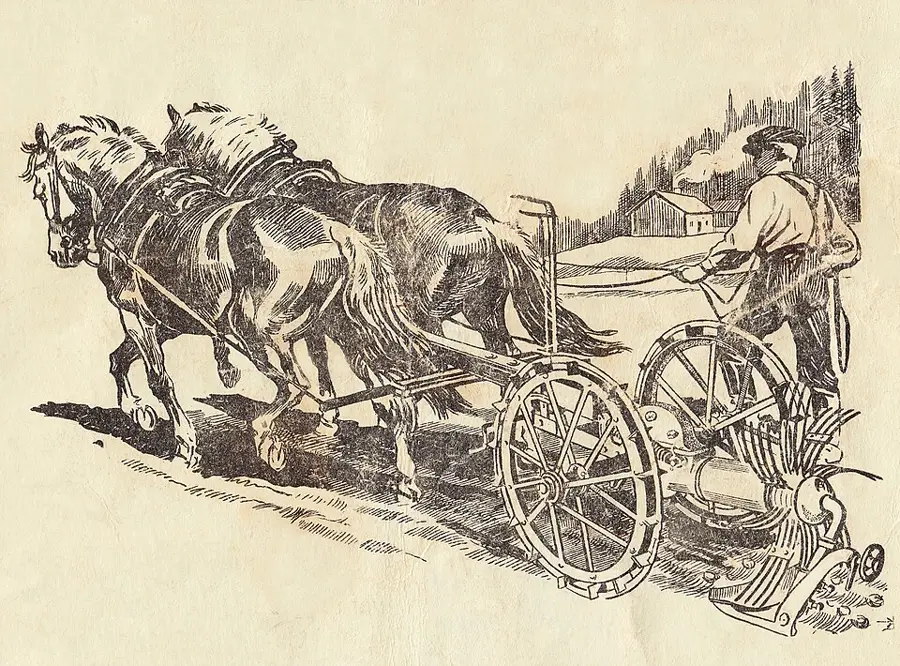
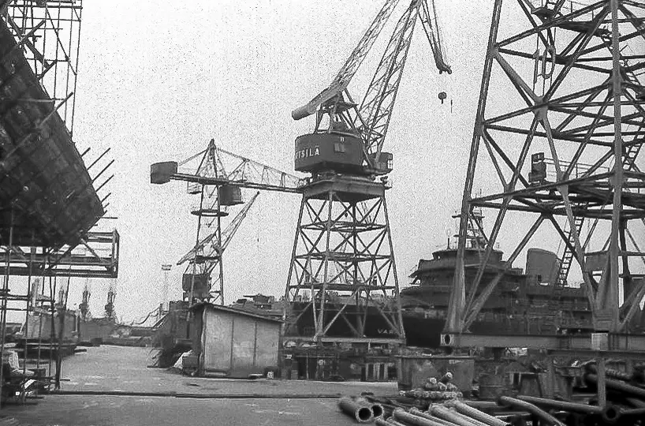
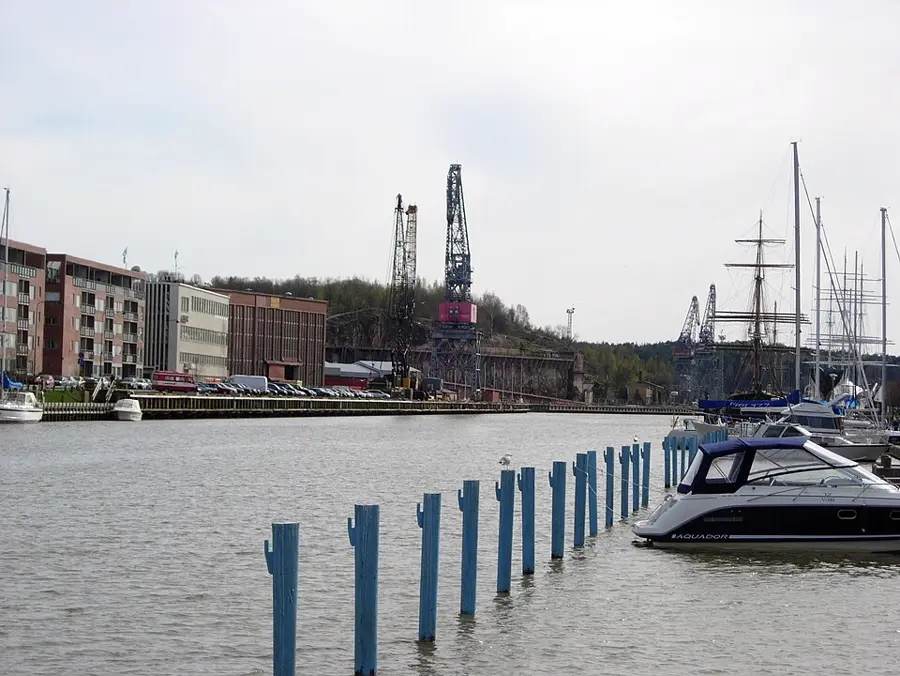

대표 로고대표 브랜드 마크
대표 로고대표 브랜드 마크바르질라 Wärtsilä
바르질라(Wärtsilä)는 해양 및 육상발전시장에 필요한 에너지 관련 장비를 생산하고 서비스를 제공하는 핀란드 기업이다. 1834년에 설립되었으며 헬싱키에 본사를 둔다.
최종 업데이트
바르질라는 어떤 브랜드인가
바르질라는 해양시장과 에너지시장에 필요한 엔진과 각종 장비를 생산하고 관련 서비스를 제공하는 핀란드 기업이다. 헬싱키에 본사를 두고 있으며 1834년에 설립되었다.
전 세계 바다를 항해하는 선박의 3척 중 1척은 바르질라가 공급한 엔진을 탑재하고 있고, 2척 중 1척은 바르질라의 서비스를 받고 있다. 해양시장의 주요 고객은 조선소와 선주이며, 육상에서는 지역난방과 열병합 등 발전설비의 공급 및 설치에 선도적인 위치에 있다.
2020년 말 현재 세계 70여 개국의 현지 법인에서 18,000여 명의 직원이 근무하고 있다. 유지 보수와 성능 개선, 교육 훈련을 아우르는 서비스도 주요 사업이다.
바르질라의 브랜드 아이덴티티는 무엇인가
해양 추진엔진과 육상 발전설비, 수명주기 서비스를 함께 제공하는 핀란드 기업으로, 전 세계 선박 3척 중 1척에 엔진을 공급한다.
바르질라의 대표 제품과 서비스는 무엇인가
해양시장에서는 선박 설계부터 주 추진엔진, 발전기용 엔진, 전기/전자 시스템, 각종 추진장치, 실, 베어링 및 환경 관련 장비를 일반상선, 해양설비, 여객선, 함정 및 특수선에 공급한다. 엔진은 육상 발전소와 선박의 추진 및 발전에 쓰이는 저속 및 중속의 디젤, 가스, 이중 및 다중연료 엔진이다.
가장 작은 엔진은 실린더당 출력이 200kW인 4행정 중속 Wärtsilä 20 엔진이고, 가장 큰 2행정 저속엔진은 실린더당 출력이 최대 5,720kW인 Wärtsilä RT-flex96C이다. 에너지시장에서는 600 MW까지의 발전 설비를 공급하며, 대부분 천연가스와 LNG, 액체연료유, 바이오 가스, 바이오 연료로 가동된다.
서비스 부문은 예비 부품 공급, 유지보수, 업그레이드, 연료 전환 솔루션, 환경 솔루션 서비스, 교육훈련을 제공한다.
바르질라는 지금 어떤 상태인가
2020년 말 현재 세계 70여 개국의 현지 법인에 18,000여 명의 직원이 근무하고 있다. 서비스 부문에는 200여 주요 도시에서 4,500명 이상의 서비스 전문가가 근무한다.
2020년(1월-12월) 수주량은 43억 유로, 수주잔량은 50억 유로, 순매출액은 46억 유로였다. 영업이익은 2억3천4백만 유로로 순매출액의 5.1%였다.
바르질라 로고는 어떻게 변해왔나
대표 로고대표 브랜드 마크사진으로 보는 바르질라의 역사



자주 묻는 질문
바르질라는 어느 나라 브랜드인가요?
바르질라는 핀란드의 에너지·산업재 브랜드입니다.
바르질라는 언제 설립되었나요?
바르질라는 1834년 설립되었습니다.
바르질라의 브랜드 아이덴티티는 무엇인가요?
해양 추진엔진과 육상 발전설비, 수명주기 서비스를 함께 제공하는 핀란드 기업으로, 전 세계 선박 3척 중 1척에 엔진을 공급한다.
바르질라의 대표 제품은 무엇인가요?
해양시장에서는 선박 설계부터 주 추진엔진, 발전기용 엔진, 전기/전자 시스템, 각종 추진장치, 실, 베어링 및 환경 관련 장비를 일반상선, 해양설비, 여객선, 함정 및 특수선에 공급한다.
바르질라는 현재 어떤 상태인가요?
2020년 말 현재 세계 70여 개국의 현지 법인에 18,000여 명의 직원이 근무하고 있다.
바르질라의 본사는 어디에 있나요?
바르질라의 본사는 헬싱키에 있습니다(위키데이터 기준).
바르질라의 공식 웹사이트는 어디인가요?
바르질라의 공식 웹사이트는 https://www.wartsila.com/ 입니다.
출처와 검증
바르질라 관련 참고: 공식 웹사이트 · 위키데이터 Q327429 · 한국어 위키백과 · 영어 위키백과. 브랜드명은 한글과 원어를 함께 표기하되 데이터에 없는 표기는 만들지 않습니다. 기원 국가·설립연도는 검수된 정의문에서 확인된 값을 우선하고, 없을 때만 공식 웹사이트 URL이 일치하는 위키데이터 개체의 값을 씁니다. 탄생일의 월·일은 위키데이터, 위키백과 정보상자, 본문 가운데 같은 연월로 확인되는 값만 싣고, 출처끼리 다르면 싣지 않습니다. 위키데이터 값은 2026-11-11 기준입니다.